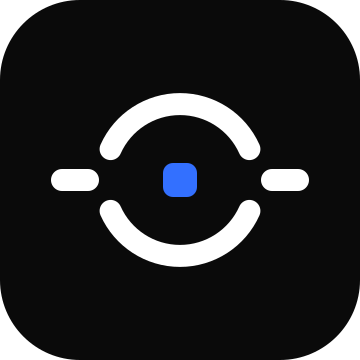

沿用参考图语言：360×360 / rx80 圆角方底、rx12 圆角几何块、纯色底 + 纯色图形、深浅双版本；品牌色取自组件 --okr-current-bg #3370FF。
最贴近参考图：纯双色、三根圆角块 + 两段连线。中轴 = 根节点，左上右下两根不等高节点 = 组件招牌的「根节点左右双向展开」，右块 -8° 取参考图的倾斜动势。
缩小版组织架构图：蓝色横条 = 目标 O，圆角折线 = 组件连线，两片子节点向外 ±7° 张开 = 「展开」的动势（不是倾倒）。
OKR 首字母 O = 断开的圆角环，左右两段短横从缺口向外伸出 = 双向展开；中心蓝色节点既是树根也是「靶心」，一形双关。三者中小尺寸表现最好，最像品牌符号而非功能示意。
